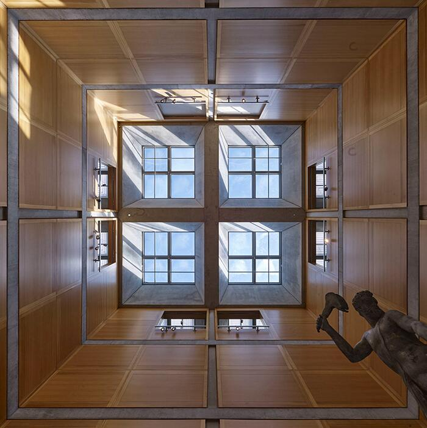
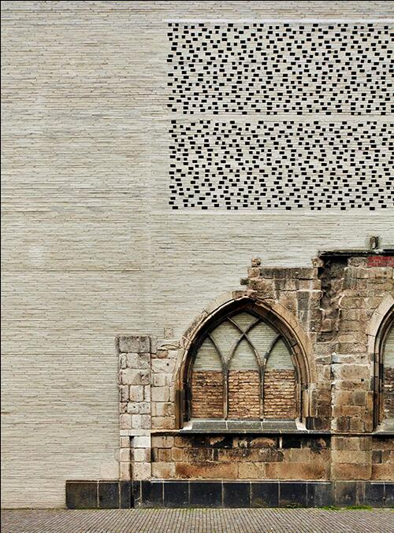
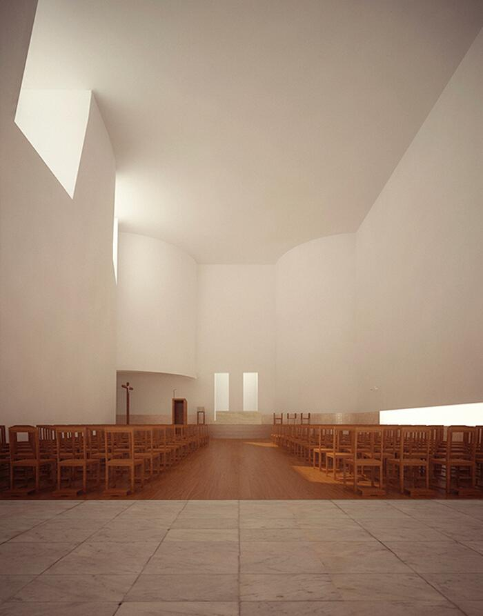
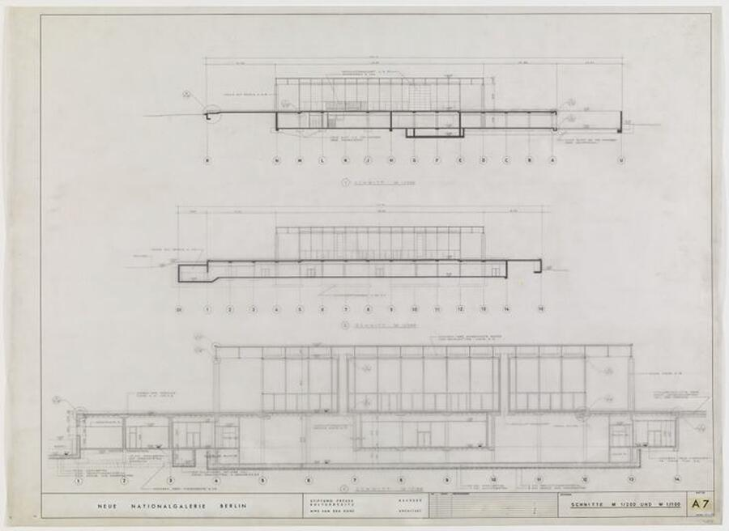
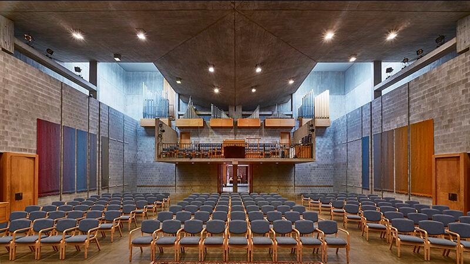
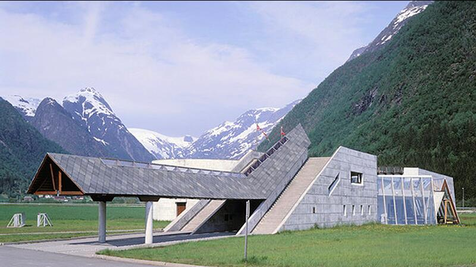
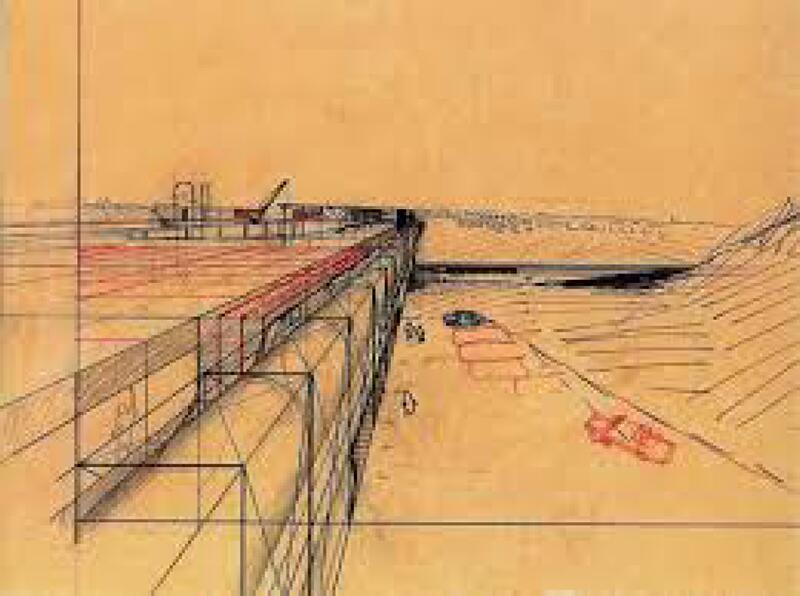
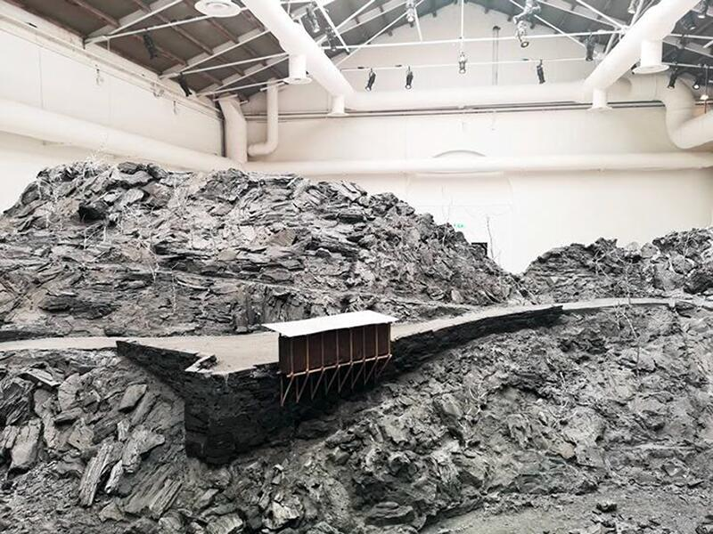
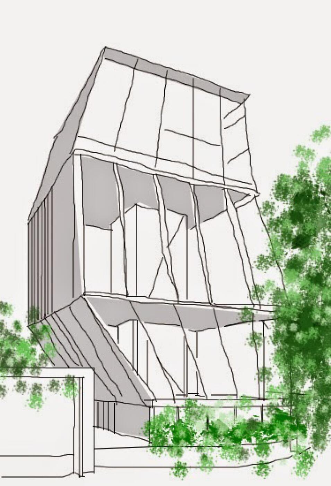

Responsabilità del progetto:
lo spazio come esperienza vissuta
L’architettura non è solo linguaggio: è un atto di responsabilità. Ogni scelta formale modella l’esperienza dello spazio, condiziona il comportamento del corpo, costruisce percezioni, orienta le emozioni. Luce, materia, atmosfera e densità non sono variabili estetiche: sono decisioni strutturali che definiscono la qualità del mondo abitabile. Questa scheda mostra opere in cui la forma nasce da una consapevolezza profonda della responsabilità progettuale.

Il Yale Center for British Art rappresenta una delle espressioni più mature del pensiero di Louis Kahn ed è un caso esemplare per la presente scheda di approfondimento, dedicata alla responsabilità del progetto e allo spazio come esperienza vissuta.
In questo edificio, la responsabilità architettonica non è un principio astratto, ma una qualità che si manifesta direttamente nel modo in cui lo spazio viene percepito, attraversato e abitato nel tempo.
La grammatica architettonica — struttura, luce, materia, proporzione — non è esibita come linguaggio formale, ma organizzata come sistema di relazioni leggibili. La griglia strutturale in cemento non è un vincolo compositivo, bensì un dispositivo di orientamento percettivo: rende lo spazio comprensibile, stabile, affidabile. Ogni ambiente è misurato per sostenere un’esperienza calma e continua, in cui il corpo non è sollecitato, ma accompagnato.
La luce naturale è il principale strumento attraverso cui questa responsabilità si concretizza. I lucernari zenitali, filtrati e controllati, non producono effetti spettacolari, ma una luminosità diffusa che costruisce un tempo lento della visione. La luce non invade lo spazio, lo misura; non drammatizza, ma chiarisce. In questo modo, l’esperienza del visitatore diventa centrale: lo spazio non distrae, non impone una direzione emotiva, ma permette una relazione attenta e rispettosa con le opere e con il luogo.
Anche la materia partecipa a questa etica dello spazio. Cemento, acciaio opaco, quercia bianca e tessuti naturali generano un equilibrio tra gravità e calore, tra struttura e tattilità. Ogni scelta contribuisce a costruire un ambiente in cui la presenza dell’architettura è costante ma mai dominante.
In relazione al tema della lezione, il progetto di Kahn dimostra che la responsabilità del progetto consiste nel prendersi cura dell’esperienza vissuta. Lo spazio non è un’immagine, ma una condizione di permanenza, orientamento e durata. L’architettura diventa così un atto etico: non afferma se stessa, ma costruisce le condizioni per un’esperienza umana misurata, dignitosa e consapevole.

Il Kolumba Museum di Peter Zumthor rappresenta un caso centrale, perché affronta la responsabilità architettonica non come problema formale, ma come costruzione consapevole dell’atmosfera e del tempo.
Edificato sulle rovine della chiesa di Santa Columba, distrutta durante la Seconda guerra mondiale, il progetto non impone una nuova forma sopra ciò che resta, ma si costruisce con ciò che resta. Zumthor assume un atteggiamento di ascolto: frammenti archeologici, vuoti, tracce materiali e memorie non vengono musealizzati come oggetti, ma integrati in un campo spaziale unitario, capace di sospendere la percezione del tempo lineare.
La responsabilità del progetto si manifesta qui come responsabilità sensoriale. Luce filtrata, murature porose, spessori profondi, suoni ovattati e variazioni di temperatura costruiscono un’esperienza che coinvolge il corpo prima ancora dello sguardo. La prospettiva non guida, ma lascia emergere lo spazio attraverso l’attraversamento lento. Il visitatore non è condotto, ma immerso.
La forma architettonica non è dichiarata in modo evidente. Emerge come sintesi necessaria di materiali, luce e vuoto. I mattoni grigi, sottili e traforati, non definiscono solo un involucro, ma regolano il passaggio dell’aria e della luce, rendendo percepibile il tempo che scorre: le ore del giorno, le stagioni, il mutare delle ombre. L’architettura non rappresenta la memoria, la rende esperibile.
In relazione al tema della lezione, il Kolumba dimostra che la responsabilità del progetto non si esaurisce nella correttezza funzionale o strutturale, ma riguarda il modo in cui lo spazio agisce sulla percezione, sulla memoria e sulla durata dell’esperienza. Costruire diventa un atto di cura: del silenzio, del vuoto, del tempo condiviso.
Zumthor mostra che l’architettura può assumersi la responsabilità di non imporsi, ma di creare le condizioni per un’esperienza profonda, lenta e consapevole dello spazio vissuto.

Nella Chiesa di Santa Maria a Marco de Canaveses, Álvaro Siza realizza un’architettura che si offre come esperienza interiore prima ancora che come forma. Il progetto rinuncia a ogni simbolismo esplicito e a ogni monumentalità retorica, assumendo invece la responsabilità di costruire uno spazio in cui la spiritualità emerge attraverso la qualità dell’esperienza vissuta.
In relazione al tema di questa scheda, la responsabilità del progetto si manifesta come controllo rigoroso dei mezzi e come adesione a un’etica della forma necessaria. Luce naturale, superfici bianche, proporzioni misurate, peso della materia e silenzio compositivo sono gli strumenti attraverso cui Siza articola uno spazio fatto di tensione, attesa e rivelazione. Nulla è aggiunto, nulla è enfatizzato: ogni elemento è calibrato per agire sulla percezione del corpo nello spazio.
La luce non entra in modo uniforme, ma è costruita come sequenza di eventi: tagli verticali, aperture laterali, lucernari e fenditure che modulano il rapporto tra interno ed esterno, tra gravità e trascendenza. La profondità non è scenografica, ma temporale: lo spazio si chiarisce progressivamente, accompagnando lo sguardo e il movimento con estrema precisione.
La grammatica architettonica — luce, proporzione, soglia, vuoto — è ridotta all’essenziale, ma proprio questa economia genera una sintassi potente. Il percorso, la disposizione delle masse, il rapporto tra pavimento, pareti e copertura costruiscono un campo di forze in cui il corpo è costantemente messo in relazione con la luce e con il silenzio. L’architettura non impone un significato, ma crea le condizioni per un’esperienza.
In questo senso, Siza non rappresenta il sacro: lo evoca. La responsabilità progettuale coincide con la rinuncia all’eccesso e con la cura della misura. La chiesa non è un oggetto da osservare, ma uno spazio da abitare lentamente, in cui luce, materia e corpo entrano in risonanza.
All’interno della lezione, il progetto di Siza mostra come la responsabilità del progetto consista nel costruire spazi capaci di accogliere l’esperienza umana nella sua dimensione più profonda, trasformando l’architettura in atto di precisione percettiva e di ascolto.
Coerenza e stabilità del campo strutturale:
quando la forma “regge” davvero
Un progetto è coerente quando ogni parte sostiene le altre: pianta, sezione, luce, percorso e materia concorrono a una logica comune e indivisibile. La forma non regge perché è “bella”: regge perché è necessaria. Questa scheda mostra esempi in cui il campo strutturale si manifesta come organismo stabile, attraversabile, verificabile da ogni punto di vista – senza incrinature, senza parti accessorie. La coerenza non è una qualità visiva, ma una struttura interna.

La Neue Nationalgalerie di Berlino rappresenta uno degli esempi più rigorosi di coerenza e stabilità del campo strutturale nella storia dell’architettura moderna. In questo progetto, Mies van der Rohe non cerca una forma espressiva, ma costruisce un sistema logico assoluto, in cui ogni parte sostiene le altre secondo una necessità interna non negoziabile.
Il progetto si fonda su un principio radicale di riduzione: un grande tetto piano in acciaio, sostenuto da una griglia strutturale regolare, e un basamento in pietra che accoglie gli spazi espositivi principali. Non esistono elementi secondari o accessori. La forma non deriva da una composizione figurativa, ma dall’applicazione coerente di una grammatica strutturale chiusa e completa.
La coerenza del campo è verificabile da ogni punto di vista. Pianta, sezione e spazio costruito coincidono perfettamente: ciò che appare è esattamente ciò che sostiene. Il modulo strutturale del tetto governa l’intero edificio, rendendo leggibili le relazioni tra carichi, luci, ritmo e vuoto. La trasparenza perimetrale non è un gesto estetico, ma uno strumento di verifica: permette di percepire la continuità del campo strutturale senza mediazioni.
Lo spazio espositivo superiore non possiede un centro simbolico né una direzione privilegiata. È il campo stesso, stabile e omogeneo, a costruire l’identità dello spazio. Come in un teorema, la struttura “regge” perché ogni passaggio è logicamente necessario; non c’è nulla da aggiungere né da sottrarre senza compromettere l’intero sistema.
In relazione al tema della scheda, la Neue Nationalgalerie dimostra che la coerenza non è una qualità visiva, ma una struttura interna. La forma non regge perché è bella, ma perché è inevitabile. Coerenza e identità coincidono: il progetto è stabile perché non potrebbe essere altrimenti. L’architettura si manifesta qui come organismo mentale prima ancora che costruito, verificabile, attraversabile, assolutamente coerente.

Nel progetto per la First Unitarian Church di Rochester, Louis Kahn porta la propria ricerca sulla coerenza architettonica a un livello di estrema concentrazione, trasformandola in una convergenza indivisibile tra spazio, struttura, luce e significato. L’edificio non è il risultato di una composizione progressiva, ma l’esito necessario di un’idea unitaria perseguita senza deviazioni.
Il cuore del progetto è l’aula centrale, uno spazio compatto e silenzioso, rigorosamente centrato e proporzionato. Questo spazio non è semplicemente il luogo del rito, ma il generatore dell’intero campo architettonico. Attorno ad esso si organizzano gli ambienti secondari, secondo una logica che distingue ma non separa: ogni parte esiste in funzione della centralità spirituale dell’aula.
La coerenza del progetto è strutturale prima ancora che formale. Le pareti portanti non delimitano soltanto lo spazio, ma lo costruiscono fisicamente e simbolicamente. La luce zenitale, filtrata e controllata, non agisce come elemento decorativo, ma come vera e propria materia costruttiva: orienta lo sguardo, stabilizza la percezione, rafforza il carattere raccolto dello spazio. Luce e gravità si incontrano in un equilibrio preciso, verificabile in ogni punto dell’edificio.
Il campo architettonico è stabile perché ogni elemento partecipa a una sola logica portante, fisica e concettuale insieme. Non esistono parti accessorie o indipendenti: modificare un elemento significherebbe compromettere l’intero sistema. La forma non ammette variazioni perché è già il risultato di una necessità interna.
In relazione al tema della scheda, la First Unitarian Church dimostra che la coerenza non è una qualità estetica, ma una struttura etica del progetto. Forma e senso coincidono. L’architettura regge perché tutte le sue parti convergono in un unico campo stabile, in cui spazio, luce e struttura sono inseparabili e inevitabili.

Nel Glacier Museum di Fjærland, Sverre Fehn costruisce uno dei suoi esempi più alti di coerenza spaziale e concettuale, dimostrando come un campo architettonico possa essere stabile senza essere rigido, e coerente senza essere chiuso. Il progetto si confronta con un paesaggio di forte intensità fisica e simbolica — i ghiacciai norvegesi — senza imitarlo né dominarlo, ma traducendone le forze in una struttura architettonica leggibile e necessaria.
La grammatica del progetto è ridotta a pochi elementi essenziali: un muro curvo in cemento armato che incide il terreno, un percorso–ponte che guida l’attraversamento interno, una luce diffusa che modella lo spazio come fenomeno temporale. Presi singolarmente, questi elementi potrebbero apparire autonomi; è la loro sintassi, però, a costruire la coerenza del campo. Nessuna parte agisce isolatamente: ogni gesto è comprensibile solo in relazione agli altri.
La stabilità del progetto non deriva da simmetrie o schemi formali rigidi, ma da un equilibrio interno tra direzioni, masse e tensioni. La sezione rafforza la pianta, la materia rende percepibile il disegno, il percorso costruisce progressivamente il significato dello spazio. Il museo non si limita a contenere una narrazione scientifica: la mette in atto attraverso l’esperienza dell’attraversamento, facendo coincidere struttura, spazio e racconto.
Fehn lavora come un geologo del progetto: osserva, stratifica, misura. L’edificio diventa una prosecuzione mentale del paesaggio, un dispositivo che rende comprensibile l’idea di ghiacciaio non come oggetto, ma come processo. Il campo architettonico che ne risulta è stabile perché ogni parte sostiene le altre, e ogni relazione è verificabile nello spazio costruito.
Nel contesto della Scheda 9.2, il Glacier Museum mostra che la coerenza del campo strutturale non è una qualità visiva, ma una struttura interna del progetto: una sintassi invisibile che tiene insieme percezione, materia e significato. La forma “regge” perché è necessaria al racconto e al luogo, e non potrebbe essere diversa senza perdere la propria identità.
La forma come sistema trasformabile:
varianti che non rompono il campo
La prova più radicale di un progetto è la sua capacità di trasformarsi senza perdere identità. Le varianti non sono decorazioni: sono test di coerenza. Una forma è forte quando può adattarsi, mutare, espandersi mantenendo intatta la propria logica interna. Le opere selezionate mostrano come la trasformazione – lungi dall’indebolire – possa rivelare la struttura profonda del progetto, rendendo visibile il campo come sistema aperto ma stabile.

Il progetto di Louis Kahn per la Sinagoga Hurva, sviluppato tra il 1960 e il 1965 attraverso una lunga sequenza di varianti, costituisce uno dei casi più profondi di forma trasformabile che non perde identità, ma anzi la rafforza nel processo di trasformazione. Pur non essendo mai stato costruito, il progetto vive come sistema coerente di versioni, ciascuna delle quali mette alla prova la stabilità del campo architettonico.
Ogni variante interviene su volumetrie, proporzioni, gradi di apertura o chiusura dell’involucro, ma non intacca mai la grammatica fondamentale del progetto. La pianta centrale, la disposizione simmetrica degli spazi di soglia, la struttura di piloni possenti, il rapporto netto tra interno raccolto ed esterno massivo, la luce zenitale come elemento ordinatore restano costanti. La trasformazione agisce sul linguaggio, non sulla sintassi.
In questo senso, la serie di varianti non rappresenta un processo di aggiustamento funzionale, ma un dispositivo critico. Kahn utilizza la trasformazione come strumento di verifica: ogni mutazione serve a interrogare la tenuta dell’impianto originario, a misurarne la capacità di assorbire cambiamenti senza perdere coerenza. La forma non si indebolisce, ma si intensifica, diventando progressivamente più essenziale, più concentrata, più necessaria.
La nozione di rovina, implicita nel nome stesso della Hurva, diventa qui una chiave progettuale. Kahn lavora come se l’architettura dovesse già contenere in sé il tempo, l’assenza, la memoria. Le varianti non cercano una versione “definitiva”, ma rendono visibile un campo architettonico che regge anche nella sua incompiutezza.
Nel contesto della Scheda 9.3, il progetto per la Sinagoga Hurva dimostra che la vera prova di coerenza non è la fissità, ma la capacità di trasformarsi senza perdere identità. La forma è forte perché può mutare rimanendo se stessa. Le varianti non rompono il campo: lo rivelano come sistema aperto e stabile al tempo stesso.

Nel Museo Nazionale di Arte Occidentale di Tokyo, Le Corbusier realizza molto più di un edificio concluso: costruisce una matrice generativa, un sistema architettonico concepito fin dall’origine per accogliere trasformazioni senza perdere coerenza. Il progetto giapponese, unica opera dell’architetto in Estremo Oriente, va letto non come episodio isolato, ma come applicazione esemplare di una logica progettuale trasferibile e verificabile.
Alla base del museo vi è una grammatica rigorosa: una griglia strutturale modulare, il volume sollevato su pilotis, la promenade architecturale organizzata attorno a una rampa continua, la luce zenitale come principio ordinatore, il rapporto dialettico tra massa costruita e vuoto centrale. Questi elementi non definiscono una forma chiusa, ma un campo strutturale aperto, capace di generare varianti coerenti.
Le diverse ipotesi sviluppate durante la progettazione – così come le possibilità di crescita insite nel concetto di museo a sviluppo illimitato – non mettono mai in discussione l’impianto originario. Le variazioni volumetriche, le rotazioni, gli adattamenti distributivi agiscono all’interno della stessa sintassi, dimostrando che l’identità del progetto non risiede nell’aspetto finale, ma nella struttura relazionale che lo sostiene.
In questo senso, la trasformazione non è un compromesso, ma una prova di coerenza. Il progetto “regge” perché è costruito come sistema: ogni parte può essere modificata, estesa o reinterpretata senza che il campo architettonico perda stabilità. È la grammatica a garantire l’unità, non la fissità della figura.
Nel contesto della Scheda 9.3, il museo di Tokyo mostra come la forma possa essere intesa come struttura generativa, capace di produrre spazio attraverso regole chiare e ripetibili. La molteplicità delle varianti non indebolisce il progetto, ma rende visibile la sua logica profonda: una forma che resta se stessa proprio perché è in grado di trasformarsi.

Il Centre Pompidou rappresenta una svolta radicale nella concezione della forma architettonica come sistema trasformabile. Piano e Rogers non progettano un edificio come oggetto concluso, ma una infrastruttura culturale aperta, capace di assorbire nel tempo mutazioni funzionali, tecniche e programmatiche senza perdere identità.
Alla base del progetto vi è una grammatica estremamente chiara: una struttura modulare in acciaio, grandi piani liberi sovrapposti, impianti e circolazioni espulsi all’esterno, una distinzione netta tra supporto permanente e contenuti variabili. Questa scelta non è un gesto espressivo, ma un atto strutturale: separare ciò che può cambiare da ciò che deve restare stabile.
La trasformabilità del Pompidou non è un effetto collaterale, ma il principio generativo stesso del progetto. Nel corso del tempo, l’edificio ha accolto funzioni diverse – museo, biblioteca, spazi performativi, installazioni temporanee, sperimentazioni digitali – senza che il campo architettonico si indebolisse. Le varianti riguardano l’uso, la distribuzione interna, i dispositivi tecnici, persino la percezione urbana dell’edificio, ma non intaccano la sintassi di base.
La coerenza del sistema risiede nella relazione tra gli elementi, non nella loro forma individuale. Ogni componente è pensato per essere sostituibile, aggiornabile, riconfigurabile. È proprio questa disponibilità al cambiamento a garantire la stabilità del campo: il progetto regge perché è strutturalmente predisposto alla trasformazione.
Nel contesto della Scheda 9.3, il Centre Pompidou dimostra che la forma può essere concepita come sistema aperto senza perdere coerenza. La trasformazione non rompe il campo, ma lo conferma. La flessibilità, qui, non è una qualità estetica né una strategia funzionale contingente: è la grammatica profonda del progetto, la condizione stessa della sua durata nel tempo.
La forma che cresce nel processo:
il progetto come costruzione progressiva
Non tutte le forme nascono da un’idea immediata. In molti casi, il progetto si sviluppa come conoscenza in divenire: un processo aperto di esplorazioni, verifiche, fallimenti e scoperte. La forma cresce per aggiustamenti successivi, come un organismo che cerca la propria coerenza nel tempo. Schizzi, modelli, prove di luce e materia non illustrano: costruiscono. Questa scheda mostra esempi in cui l’architettura si configura nel fare, non nel sapere già dato.

Il Potteries Thinkbelt di Cedric Price rappresenta uno dei casi più radicali di progetto inteso come processo in divenire, in cui la forma non precede l’azione ma nasce dall’uso, dal tempo e dalla trasformazione continua. Non si tratta di un edificio né di un piano urbanistico tradizionale, ma di una infrastruttura culturale mobile, concepita come sistema di apprendimento capace di adattarsi alle condizioni sociali, tecnologiche ed economiche.
Il progetto non parte da una figura architettonica da realizzare, ma da una domanda fondamentale: come può il sapere muoversi, crescere, trasformarsi? La risposta di Price è un paesaggio progettuale fatto di dispositivi temporanei, moduli intercambiabili, padiglioni su rotaie, stazioni attivate e disattivate secondo necessità. Ogni elemento è pensato come provvisorio, reversibile, aggiornabile. La forma non è un obiettivo, ma una conseguenza contingente del processo.
Il Thinkbelt si sviluppa attraverso mappe, schemi operativi, diagrammi e scenari d’uso. Ogni disegno è una ipotesi, non una soluzione definitiva. Il progetto avanza per tentativi, verifiche e possibilità alternative, rifiutando l’idea di un assetto finale stabile. Proprio per questo, il sistema risulta coerente: la sua grammatica non è la permanenza, ma la variazione controllata; la sua sintassi è il cambiamento come regola.
Nel contesto della Scheda 9.4, il Potteries Thinkbelt mostra come la forma possa crescere nel fare, non nel sapere già dato. La coerenza non deriva da una figura riconoscibile, ma dalla capacità del progetto di reggere trasformazioni continue senza perdere senso. La stabilità non è affidata alla durata materiale, ma alla chiarezza del processo che governa il cambiamento.
La lezione che ne deriva è decisiva: il progetto può essere una piattaforma di evoluzione, più che un oggetto compiuto. In questa prospettiva, l’architettura non si definisce come forma finita, ma come costruzione progressiva di possibilità.

Nel progetto per l’Allmannajuvet Zinc Mine Museum, Peter Zumthor mette in atto un processo di progettazione fondato su aggiustamenti successivi e su una forma che cresce lentamente nel confronto con il luogo. Sviluppato nell’arco di oltre un decennio, il complesso non nasce da un’idea immediata da applicare al sito, ma da una ricerca progressiva in cui la chiarezza progettuale emerge nel tempo, attraverso verifiche, correzioni e riformulazioni.
Il contesto — una gola ripida e remota nella regione di Sauda, segnata dalla memoria industriale delle miniere — non è uno sfondo da rispettare, ma una materia attiva che orienta il progetto. Topografia estrema, clima rigido, vegetazione, tracce estrattive e vuoti residui diventano parametri generativi. Zumthor lavora per sottrazione e misura: ogni scelta nasce da una relazione sensibile con il paesaggio, cercando un equilibrio tra presenza e fragilità. I padiglioni, le passerelle e i punti di accesso sembrano posarsi sul terreno con prudenza, quasi sospesi, come presenze necessarie e al tempo stesso reversibili.
La costruzione della forma è inseparabile dagli strumenti di esplorazione. Schizzi, modelli fisici e prove di luce non illustrano un’idea già definita: la producono. I modelli servono a testare rapporti di scala, distanze e appoggi; le simulazioni luminose verificano come la luce nordica attraversi e trasformi gli spazi; i materiali — legno scuro, metallo brunito — vengono scelti e calibrati per reagire alle condizioni variabili del luogo. Ogni elemento viene ridefinito più volte in un lento percorso di chiarificazione.
Il risultato non è un insieme di edifici-oggetto, ma un sistema di situazioni percettive che costruisce un’esperienza: un percorso di rivelazione che accompagna il visitatore tra silenzio, materia e luce, fino alla soglia della montagna e alla memoria del lavoro minerario. La robustezza tecnica convive con una percezione di provvisorietà: un paradosso controllato che restituisce la dimensione temporale del sito senza retorica.
Nel quadro della Scheda 9.4, l'Allmannajuvet Zinc Mine Museum mostra come la forma possa nascere nel processo, come conoscenza in divenire. Il progetto non applica una figura: la cerca. E dimostra che, in certi casi, costruire coincide con pensare — e la coerenza emerge non dalla decisione immediata, ma dalla durata del confronto con il luogo.

La Casa a Chiasso, una delle prime opere europee di Kazuyo Sejima, rappresenta un esempio paradigmatico di forma che cresce nel processo, attraverso un fare progettuale leggero, esplorativo e non lineare. Il progetto non nasce da un’idea formale definita, ma da una sequenza di tentativi, slittamenti e aggiustamenti minimi, come un disegno tracciato e corretto più volte sul foglio.
La forma architettonica emerge gradualmente. Schizzi rapidi, diagrammi e plastici elementari non servono a rappresentare una soluzione già pensata, ma a scoprirla nel tempo. La pianta si costruisce per spostamenti impercettibili, i pieni e i vuoti si calibrano come frammenti di un insieme instabile, che trova coerenza non attraverso la simmetria o la chiusura tipologica, ma grazie a un equilibrio sottile tra parti.
L’instabilità iniziale non viene corretta o mascherata: diventa la condizione generativa del progetto. Pareti curve, margini indefiniti, variazioni di altezza e continuità spaziali producono un’architettura che non si impone come oggetto concluso, ma resta aperta, porosa, in dialogo costante tra interno ed esterno. Gli spazi si susseguono in sequenze fluide, come se fossero ancora in fase di tracciamento.
Il bianco dominante, la riduzione estrema dei dettagli, la leggerezza dei materiali rafforzano l’impressione di una costruzione appena emersa dal processo ideativo. Nulla è superfluo, ma nulla è dichiarato in modo definitivo. La casa sembra sospesa tra provvisorietà e precisione, tra fragilità e controllo.
Nel contesto della Scheda 9.4, la Casa a Chiasso costituisce una lezione di metodo: mostra come l’architettura possa nascere da un fare esplorativo, in cui la forma non precede il processo ma ne è il risultato. L’indeterminatezza iniziale non è un limite, ma una risorsa. La coerenza finale non cancella l’instabilità, ma la trattiene come parte integrante dell’opera.